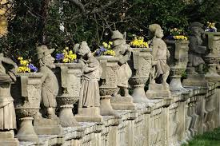
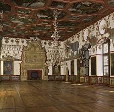
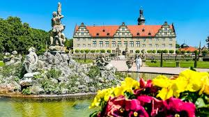

🏰 Περιήγηση στο Παλάτι
Περιηγηθείτε στο εσωτερικό του παλατιού, γνωρίζοντας την αρχιτεκτονική, τις τοιχογραφίες και τη ζωή των ηγεμόνων της οικογένειας Hohenlohe.

Καλωσορίσατε στην εικονική εμπειρία του Κάστρου Weikersheim! Ακολουθεί ένας αναλυτικός οδηγός για να απολαύσετε στο έπακρο την εφαρμογή.
Περιηγηθείτε στο εσωτερικό του παλατιού, γνωρίζοντας την αρχιτεκτονική, τις τοιχογραφίες και τη ζωή των ηγεμόνων της οικογένειας Hohenlohe.
Απολαύστε τους γαλλικού στυλ κήπους με τις γεωμετρικές φυτεύσεις, τα σιντριβάνια και τις προοπτικές που παραπέμπουν στην Αναγέννηση.
Γνωρίστε τις περίφημες φιγούρες-νάνοι που διακοσμούν τον κήπο, καθεμία με τη δική της ιστορία και συμβολισμό.


Στάσου μπροστά από σημαντικά αντικείμενα του κάστρου και με το κουμπί "Ζ" θα γίνετε αφήγηση με ήχο.
Αγοράστε εικονικά αντικείμενα όπως ρέπλικες όπλων, αγαλματίδια και ιστορικά βιβλία. Μπορείτε να τα περιηγηθείτε σε 2D προβολή και να τα αγοράσετε με «εικονική κάρτα».

Δημιουργήθηκε για εκπαιδευτικούς σκοπούς – Πλαίσιο μαθήματος Ανθρώπου-Υπολογιστή